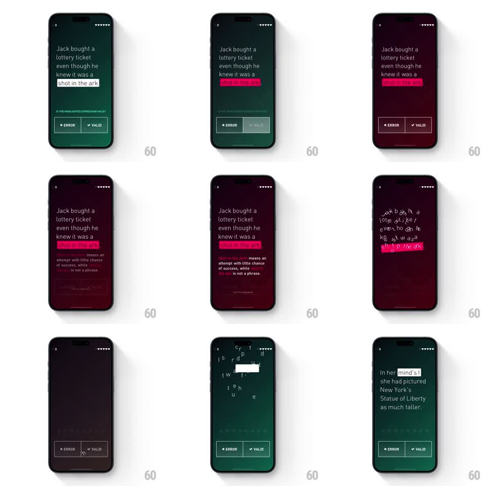

Media
Frame-by-frame

Rebuild this interaction 1:1: Elevate's wrong-answer beat - the highlighted phrase flashes red, an explanation fades in below, and on continue the sentence's letters collapse under gravity, piling at the bottom of the screen.

Rebuild this interaction 1:1: Elevate's wrong-answer beat - the highlighted phrase flashes red, an explanation fades in below, and on continue the sentence's letters collapse under gravity, piling at the bottom of the screen.
## Integration
Integration: stack-agnostic spec - springs given as stiffness/damping, timed motions as duration + curve; map every value to your framework and animation library of choice.
## Scene
Elevate question screen, dark: a sentence ("Jack bought a lottery ticket even though he knew it was a shot in the ark") with the phrase "shot in the ark" highlighted; "IS THE HIGHLIGHTED EXPRESSION VALID?" prompt; ERROR / VALID buttons. Wrong state: the highlight turns magenta-red, the screen warms darker, and an explanation block appears ("shot in the dark means an attempt with little chance of success, while the ark is not a phrase").
## Motion spec
Pattern: red-highlight error reveal with an explanation, then a gravity letter collapse.
- On the wrong answer the highlight flips white -> magenta (150ms) and the screen background shifts to a dark red cast (300ms); the chosen button shakes 3 cycles (translateX +/-6px, 240ms).
- The explanation fades in below the passage (translateY 10 -> 0, 300ms) with the key correction word itself highlighted.
- "TAP TO CONTINUE" pulses softly at the bottom (opacity 0.5 -> 1, 1.2s loop).
- On continue: the passage's letters lose their baseline - each glyph falls with gravity (accelerating translateY, rotate +/-30 degrees, staggered 8ms per letter, 600-900ms) and lands in a loose pile along the bottom edge (tiny bounce, spring ~300/12), then the pile fades out (300ms) as the next question fades in (300ms).
## Calibration
- The fall is per-letter physics - heavier letters can fall a touch faster for texture.
- The red state is the only warm screen in the flow; everything returns cool on the next question.
## Reduced motion
Highlight crossfades to red (200ms); passage fades out whole (300ms).
## Don't miss
- Letters accumulate visibly at the bottom before fading - the pile is the punchline.
- The explanation's correction word carries the same magenta highlight, tying it to the error.